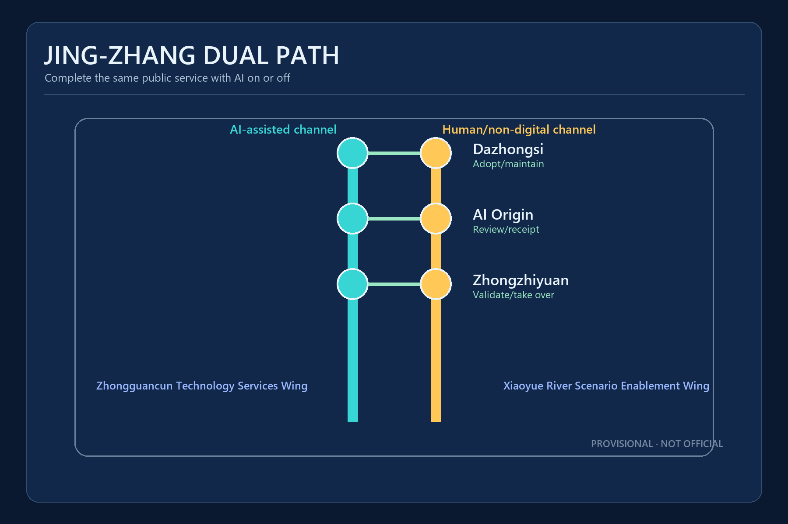
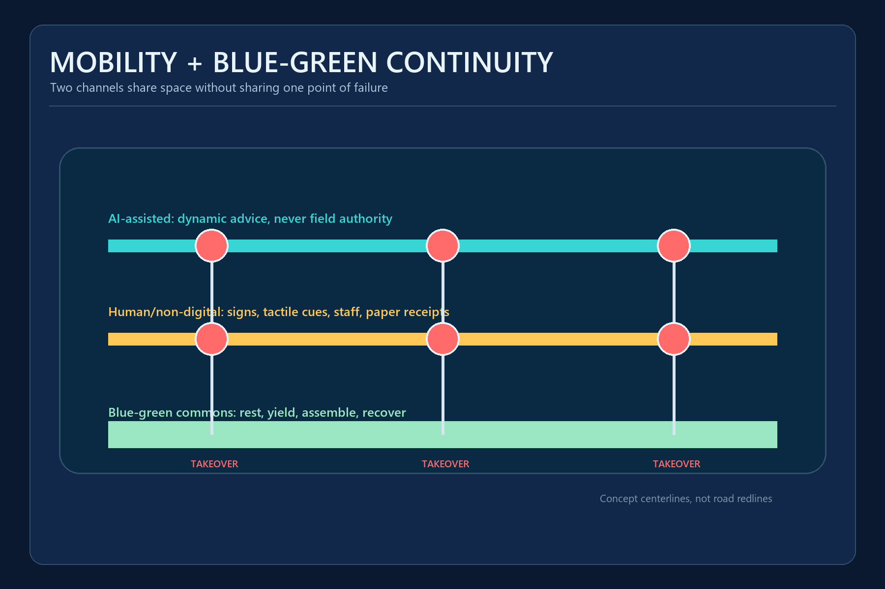
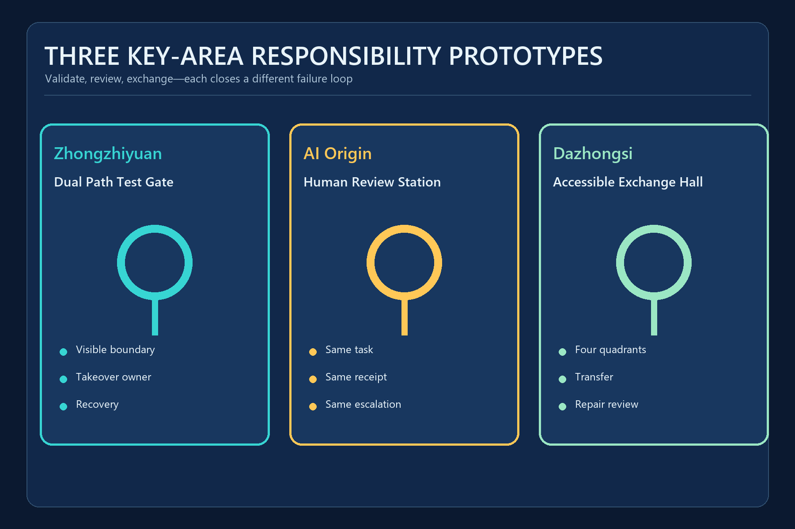

Tactile guidance, printed route cards and staff accompaniment
Switch to staff support on a route break, location drift or user requestCENTENNIAL JING-ZHANG AI INNOVATION BELT
JING-ZHANG DUAL PATH
Complete the same public service with AI on or off
Provisional geometry is used only for generation, visualization and intake checks; it is not an official boundary, statutory plan or engineering basis.
Overview Map

Three-Level Scope
43.6 km² research / about 11.4 km² provisional overall / three detailed key areas
Key Areas
Zhongzhiyuan validates · AI Origin reviews · Dazhongsi exchanges
Land-Use Zones
Inclusive R&D, heritage park, service validation and staffed community support
Mobility and Walking / Blue-Green Public Space

Buildings / Renewal Projects

AI Scenarios
Timetabled accessible minibus and on-site dispatcher
Stop on geofence breach, lost link, severe weather or takeover requestScheduled checklist, phone reporting and physical protection
Never auto-close a case when obstacle classification is uncertainStaff guidance, fixed accessible detour map and help points
Downgrade to staff confirmation when status data is staleOn-site guidance, human handling and paper receipt
Identity, eligibility and legal judgments remain with authorized staffPublic address, lights, staff and physical assembly points
Emergency command prevails; AI cannot independently order evacuationRelief maps, braille, plain text and scheduled human tours
Unsourced historical content cannot be displayed as factHuman delivery and manual robot recovery
Stop for blind spots, crowding, vulnerable-user discomfort or geofence breachAdvisor interview, telephone and printed course directory
No automated rejection, ranking or inference of health or disabilityPhone, paper log, service desk and public ticket number
A case cannot auto-close before field verificationCore Metrics
11.413 km²provisional overall site
17.53%concept green-spine ratio
0.88%concept public-forecourt ratio
Task Coverage
Announcement clauses 1.3-1.5 and agent.1-agent.6 map to narrative, layers, metrics and drawings.
Self-Check Status
This page shows build state; self_check.json and PR CI are authoritative.
Sources / Assumptions
The official announcement supports tasks; provisional geometry supports temporary generation; controls, roads, ownership and field performance remain pending.